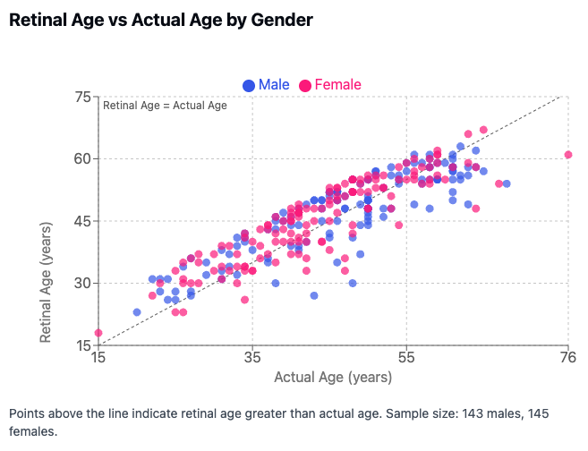
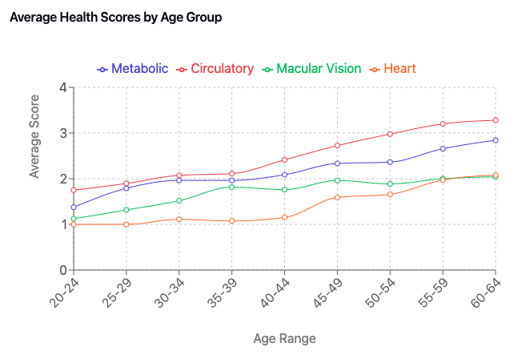

4 Opticare AI – 创新与健康的结合
在当今快速发展的健康与保健领域，技术正在改变专业人士评估、监测和改善患者健康的方式。Opticare AI眼底相机处于这一转变的前沿，这一创新工具将尖端成像技术与人工智能(AI)的力量相结合。本章探讨Opticare AI如何弥合传统健康实践与最先进健康评估之间的差距，使从业者能够提升其服务水平，同时增强患者成果。
眼睛常被称为”心灵的窗户”，同时也是健康的窗口。通过分析视网膜，健康专业人士可以深入了解全身健康状况，提供无创、无痛的健康评估方法。对于寻求吸引精通技术、注重健康的客户的诊所来说，Opticare AI相机是一个改变游戏规则的工具。
4.1 Opticare AI – 健康报告与分析
Opticare AI系统通过全面的报告将复杂的视网膜数据转化为可行的健康洞察，解决健康的多个维度。本章详细探讨每项健康指标，解释其科学基础和对健康从业者的实际影响。
每份Opticare AI报告都源自对高分辨率眼底图像的复杂分析，利用经过数百万标记视网膜图像训练的深度学习算法。报告在成像后几分钟内生成，并提供关于五个关键健康维度的见解：
- 黄斑视力健康
- 循环系统健康
- 认知健康
- 代谢健康
- 心血管健康
分析在图像捕获后立即开始，AI算法检查无数视网膜特征，包括血管模式、层结构和组织特征。这种多维分析允许进行全面的健康评估，远超传统的视力筛查。

报告结构与呈现
报告设计注重清晰度和可操作性，每个健康维度单独呈现。从业者可以选择将某些报告设为可选，只有在解锁后才能查看，从而允许灵活的服务模式和分阶段实施。这一功能对大规模筛查活动特别有价值，从业者可以免费提供一两份基本健康报告作为激励，同时为预约或支付小额费用解锁额外见解的客户保留全面结果。
Opticare报告的视觉设计通过直观的风险分类系统优先考虑直观理解。健康指标分为四个广泛类别，每个类别都有不同的颜色编码：
- 低风险（绿色）
- 中低风险（黄色）
- 中高风险（橙色）
- 高风险（红色）
这种有意的简化服务于多种目的。首先，它承认基于AI的健康评估仍然是一门不断发展的科学，避免暗示可能误导人的精确度。其次，它以容易理解的格式呈现信息，客户可以快速理解。第三，它便于进行关于健康趋势的富有成效的对话，而不会因微小变化而造成不必要的焦虑。
每份报告包括：
- 特定健康维度的总结分数
- 贡献因素的详细分析
- 比较数据，显示结果相对于同龄人群标准的位置
- 对回访客户的变化指标，突出改进或自上次评估以来的下降
- 进一步调查或干预的建议重点领域
- 可定制的建议，从业者可以根据其特定方法进行调整
报告可以广泛定制，以符合每个诊所的方法和品牌标识。从业者可以添加其徽标、联系信息，甚至预约功能，使客户轻松预约随访。建议部分特别灵活，允许从业者用反映其独特方法的具体指导取代通用建议——无论是营养策略、补充剂建议还是特定治疗方式。
这种结构化方法允许从业者快速掌握关键见解，同时可以在需要时获取更深入的信息。标准化格式还便于随时间比较，使有效监控对健康干预的反应变化成为可能。
我们必须反复强调：Opticare AI系统目前未经FDA授权诊断或治疗任何疾病。以下讨论指出了使用先进的AI驱动眼底摄影理论上可能进行的诊断类型，但当前的Opticare AI系统不提供诊断。任何与健康相关的结论必须由合格的专业人员做出至关重要。
4.2 视网膜年龄评估
基于第2章讨论的研究，视网膜年龄评估提供了一个源自眼底成像分析的强大生物老化生物标志物。Opticare的复杂AI算法评估众多视网膜特征，确定”RetinalAge™“评分，这个评分通常与实际年龄不同，提供有关整体健康状况和寿命潜力的宝贵见解。
分析的关键组成部分：
- 对视网膜微血管模式的详细评估
- 血管弯曲度和分支结构的评估
- 神经组织完整性和组织的分析
- 色素分布和组织密度的评估
- 与广泛规范数据库的比较
视网膜年龄评估的科学基础，如第2章所探讨的，来自显示视网膜特征与生物老化过程之间存在强相关性的里程碑研究。新加坡眼病流行病学研究和英国生物银行的研究表明，视网膜年龄差距（预测视网膜年龄与实际年龄之间的差异）是死亡风险和健康结果的重要预测指标。
当Opticare AI系统生成RetinalAge™评分时，它不仅仅是估计眼睛看起来有多老，而是评估整个身体如何通过视网膜窗口反映出的老化情况。视网膜的独特属性——与脑组织共享的胚胎学起源、允许直接观察的透明性质以及丰富的微血管网络——使其成为评估整体生物老化的理想组织。
理解报告：
视网膜年龄评估提供几个关键指标：
- 基于视网膜特征的估计生物年龄
- 与实际年龄的比较（视网膜年龄差距）
- 相比同龄人群的百分位排名
- 影响评分的具体贡献因素
- 对回访客户的趋势分析
RetinalAge™评分显著低于实际年龄表明健康的老化模式和潜在降低的年龄相关疾病风险。相反，超过实际年龄的视网膜年龄可能表明加速老化过程，需要进一步调查或生活方式修改。
临床应用与现实期望：
对于从业者来说，理解并传达视网膜结构随时间通常表现出显著稳定性很重要。与一些可能通过干预快速改善的生物标志物不同，视网膜变化往往是渐进和累积的。通过视网膜评估视角，健康干预的主要目标通常是减缓或阻止退化，而不是逆转现有变化。
从业者可以使用视网膜年龄评估来：
- 建立监测未来变化的基线
- 确定预防措施可能最有益的领域
- 跟踪较长时间内的变化率
- 指导可能防止进一步退化的干预
- 为客户设定关于监测结果的现实期望
Opticare评估对于识别先前生活方式因素的影响特别有价值。例如，前吸烟者通常会显示反映过去暴露的永久视网膜变化。虽然这些变化可能不会逆转，但戒烟和其他积极干预可以显著减缓或阻止进一步退化——即使没有绝对分数的改善，这也是一项重要的健康成就，应该庆祝。

对于回访客户，随时间监测视网膜年龄稳定性提供关于健康干预有效性的客观反馈。成功通常不是通过分数改善定义的，而是通过维持稳定性（在原本预期会退化的情况下）定义的。这代表了一种更现实和科学合理的纵向监测方法。
视网膜年龄评估代表了AI驱动眼底摄影的最强大应用之一，提供了以前只能通过侵入性测试或复杂实验室分析获得的老化过程的见解。通过以可访问、非侵入性格式提供这种复杂指标，Opticare为健康从业者提供了一个有价值的工具，用于建立基线、识别风险因素并监测预防干预的有效性。
4.3 黄斑视力健康
基于第2章讨论的研究，黄斑视力健康评分评估对中央视力至关重要的视网膜结构。技术熟练的专业人士可以使用眼底图像来评估：
- 黄斑完整性和潜在年龄相关变化的评估
- 视网膜神经纤维层厚度分析
- 玻璃膜疣存在和特征的评估
- 潜在血管异常的检测
该指标的科学基础来自将视网膜结构变化与眼部健康和全身条件联系起来的广泛研究。如第2章所讨论的，研究已经证明黄斑健康与各种全身条件之间存在强相关性，包括：
- 年龄相关黄斑变性风险评估
- 糖尿病视网膜病变模式的早期检测
- 高血压视网膜病变迹象的识别
从业者可以使用这些信息来：
- 指导预防性眼部护理建议
- 确定可能需要专科转诊的情况
- 监测当前健康干预的有效性
黄斑视力健康报告提供对中央视网膜的全面评估，突出优势和潜在关注领域。虽然避免具体诊断声明，但它提供了有价值的见解，可以指导健康建议并突出可能需要视力专家进一步调查的模式。
例如，报告可能表明黄斑结构的细微变化与年龄相关视力变化的已知风险因素相关。这些信息允许从业者讨论预防措施，如营养干预、蓝光保护或支持长期眼部健康的生活方式改变。
4.4 循环健康
循环健康指标分析视网膜血管模式，提供关于全身血管健康的见解。这种评估包括：
- 血管口径测量
- 动脉-静脉比率分析
- 血管弯曲度评估
- 微血管模式评估
借鉴第2章1和随后研究中提出的研究，眼底图像可以反映：
- 全身血管健康状态
- 潜在心血管风险因素
- 微循环功能
科学基础包括：
- 视网膜血管特征与全身血压之间的相关性研究
- 将血管模式与心血管结果联系起来的研究
- 展示各种循环条件预测价值的研究
循环健康报告提供了对身体微血管系统的窗口，这常常反映更广泛的血管健康趋势。从业者可以使用这些信息来指导关于心血管健康策略的讨论，包括营养方法、运动建议和支持健康循环的压力管理技术。
对于回访客户，随时间跟踪血管模式的变化可以提供关于健康干预有效性的客观反馈。视网膜血管特征的改善通常与更广泛的血管健康改善平行，提供积极变化的有形证据，可以增强客户的动力和参与度。
4.5 认知健康
认知健康评估利用将视网膜特征与神经系统健康联系起来的新兴研究。关键组成部分包括：
- 视网膜神经纤维层分析
- 血管模式评估
- 结构完整性评估
基于第2章2讨论的研究，该指标考虑：
- 神经组织健康指标
- 与认知功能相关的血管模式
- 视网膜结构的年龄相关变化
科学基础包括：
- 将视网膜变化与认知下降联系起来的研究
- 关于神经退行性疾病早期标记的研究
- 视网膜结构与脑健康之间的相关性研究
认知健康报告提供关于潜在神经健康模式的有价值见解，同时谨慎避免具体诊断声明。这些信息可以指导关于促进脑健康的生活方式实践的讨论，包括认知刺激活动、支持神经功能的营养方法和促进脑健康的体育活动。
对于专注于整体健康的诊所，认知健康报告提供了一个独特的机会，可以解决客户通常难以客观评估的健康方面。随时间可视化和跟踪神经健康标记的能力提供了一种有形的方式来讨论认知健康策略，这些策略可能看起来抽象或难以衡量。
4.6 代谢健康
代谢健康评分源自将视网膜变化与代谢功能联系起来的广泛研究。这包括对以下内容的分析：
- 微血管模式
- 血管壁特征
- 组织灌注指标
研究支持来自：
- 关于糖尿病视网膜病变模式的研究
- 将代谢综合征与视网膜变化联系起来的研究
- 关于视网膜组织中胰岛素抵抗标记的调查
代谢健康报告提供与代谢功能相关的模式的见解，为这一关键健康方面提供独特的窗口。从业者可以使用这些信息来指导关于营养策略、体育活动建议和其他支持代谢健康的干预措施的讨论。
对于专注于体重管理、代谢优化或运动表现的诊所，这份报告提供了有关当前策略如何影响微血管水平代谢功能的有价值信息。当与可能没有看到传统指标（如体重或身体成分）即时变化但在代谢健康方面取得有意义进展的客户合作时，这一点特别有价值。
4.7 心血管健康
基于第2章3中提出的研究，该指标评估：
- 动脉特征
- 静脉模式
- 整体血管健康指标
科学基础包括：
- 将视网膜模式与心血管结果联系起来的大规模研究
- 关于血管特征预测价值的研究
- 长期结果研究
心血管健康报告提供与心脏健康相关的模式的全面评估，补充传统心血管风险评估。这些信息可以指导关于心脏健康营养、适当体育活动、压力管理和其他支持心血管健康的干预措施的讨论。
对于已经纳入其他心血管评估的诊所，Opticare报告提供了互补信息，这些信息通常反映比传统测量（如血压或胆固醇筛查）可能检测到的更早期的变化。这种早期预警能力完美契合健康实践的预防重点。

4.8 实际实施
解读报告
从业者应将这些报告视为对话的开始，补充其他临床发现，而非明确的诊断工具。这一观点与Opticare的理念（在第6章进一步探讨）一致，即使科学继续发展，现在提供先进技术比等待完美验证提供更大好处。
解读报告时的关键考虑因素包括：
- 理解正常变异
- 识别显著变化
- 确定需要进一步调查的模式
- 将结果放在客户年龄范围的背景中解读
- 当出现矛盾时优先考虑已确立的临床发现
解读Opticare报告时，考虑绝对值和随时间的趋势都是至关重要的。单次测量提供有价值的基线信息，但最有意义的见解通常来自跟踪多次评估的变化。特定指标的改善或下降可以帮助评估健康干预的有效性并指导调整治疗计划。
年龄考虑在解读结果时特别重要。健康问题的患病率随年龄自然增加，因此风险指标往往在整个生命周期中遵循可预测的模式。二十几岁的年轻客户通常在各类别中主要显示”绿色”（低风险）结果，而六十几岁的客户可能通常显示更多”橙色”（中高风险）指标，而不一定有急性健康问题。在讨论结果时应考虑这种与年龄相关的进展。
当Opticare结果与其他临床发现矛盾时，从业者应优先考虑已确立的护理标准。例如，如果客户的HbA1c表明代谢问题，但其Opticare代谢健康报告显示低风险，从业者应遵循处理升高HbA1c的标准协议。相反，如果Opticare报告表明具有正常胆固醇和血压的客户有中高心血管风险，从业者应将其视为一个可能需要监测而非立即干预的单一数据点。技术应增强而非取代临床判断。
解读结果时，上下文至关重要。客户的年龄、整体健康状况、药物使用和最近的生活方式变化等因素都可能影响视网膜模式。Opticare AI系统考虑了许多这些因素，但专业判断对于正确解读仍然至关重要。
虽然系统识别与各种健康维度相关的模式，但从业者在讨论结果时应保持适当的专业界限。重点应保持在健康促进和潜在问题的早期识别上，而非特定疾病诊断。将报告视为健康对话的开始，而非关于客户状况的最终结论。
客户沟通
关于报告发现的有效沟通包括：
- 清晰解释指标
- 在整体健康评估中的背景
- 适当地构建结果
- 与其他临床发现的整合
与客户讨论Opticare报告时，视觉辅助可以显著增强理解。报告本身设计有清晰的图形，帮助客户快速掌握复杂信息。引导客户浏览每个指标，同时用日常术语解释其重要性，有助于建立理解和信任。
将讨论构建为健康优化而非疾病预测。例如，与其关注与某些模式相关的潜在负面结果，不如强调客户可以采取的积极步骤来支持报告涵盖的每个维度的健康。
将Opticare发现与健康评估的其他方面联系起来，创建关于客户当前健康状况和改进机会的连贯叙述。这种整合方法帮助客户看到全面评估的价值，理解各种健康方面如何相互关联。
使用报告作为协作目标设定的基础。指标的视觉性质使建立基线测量和设定特定、可衡量的改进目标变得容易。这种协作方法增强了客户参与和对其健康旅程的所有权。
随访协议
建立明确的协议：
- 定期监测间隔
- 显著发现响应
- 转诊标准
- 进展跟踪
根据初始发现制定标准化随访时间表。例如，指标在最佳范围内的客户可能从年度重新评估中受益，而显示潜在关注模式的客户可能需要更频繁的监测，如季度或半年度随访。
创建明确的指导方针，说明何时的发现需要转诊给其他医疗提供者。在保持适当实践范围的同时，建立与能够提供更详细评估的专家的关系。记录您的转诊协议，确保所有客户获得一致、适当的护理。
实施系统性进展跟踪，允许轻松可视化随时间的变化。这可能包括跨多次评估的关键指标的图形表示，突出改进和需要持续关注的领域。
使用随访预约强化积极变化并解决挑战。回顾先前建议，评估遵从性，并根据主观反馈和视网膜模式的客观变化调整健康计划。
4.9 与实践理念的整合
Opticare AI系统与技术通常比传统科学验证过程更快的理念一致——这一概念在第6章中有更详细的探讨。这种前瞻性方法认识到，等待完全科学共识再采用潜在有益技术可能会延迟宝贵的护理机会。
将Opticare报告整合到您的实践理念中时，将其视为提供独特见解的创新工具，而非明确的诊断工具。它们的最大价值通常在于其能力：
- 启动与客户的有意义健康对话
- 提供否则抽象健康概念的视觉表示
- 跟踪可能无法通过传统评估捕获的细微变化
- 在临床症状出现前提供潜在问题的早期指示
- 通过技术先进且可访问的评估增强客户参与
这种方法既承认基于AI的眼底相机健康评估的潜力和局限性，又在全面健康实践中最大化其价值。通过将技术定位为多方面评估策略的一个组成部分，从业者可以利用其能力，同时保持适当的专业视角。
4.10 结论
Opticare AI健康报告提供了一种复杂而又易于理解的方式，利用视网膜成像进行全面健康评估。通过理解这些指标的科学基础和实际应用，从业者可以有效地将这项技术整合到他们的健康实践中，同时保持适当的专业界限。
将报告视为”对话的开始，而非结束”捕捉了其正确实施的精髓。这一观点认识到基于AI的眼底相机健康评估继续发展，即使科学继续发展，从业者和客户都从访问尖端技术中受益。
下一章将探讨Opticare系统在各种临床环境中的实际应用，基于对健康指标及其重要性的理解。
Opticare AI报告源自设备的高分辨率眼底成像能力与深度学习算法的结合。报告在成像过程后快速生成，并总结患者在循环、认知、代谢和心血管健康等领域的潜在健康风险，以及特定眼部相关健康标记。该技术对易用性、速度和全面指标的关注确保这些报告对健康和保健专业人士既具可行性又易于理解。